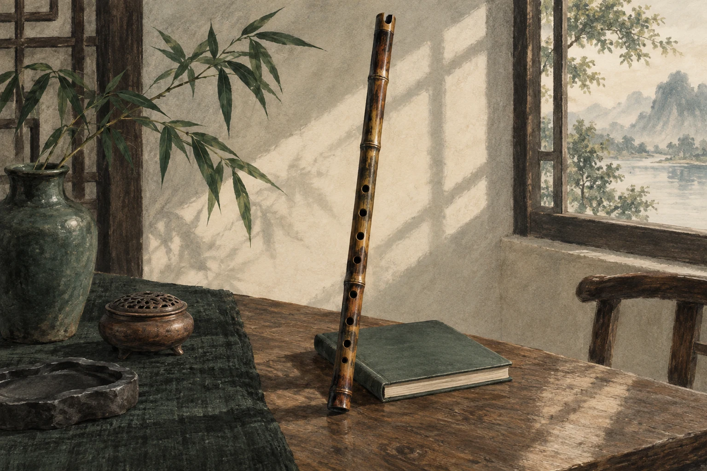
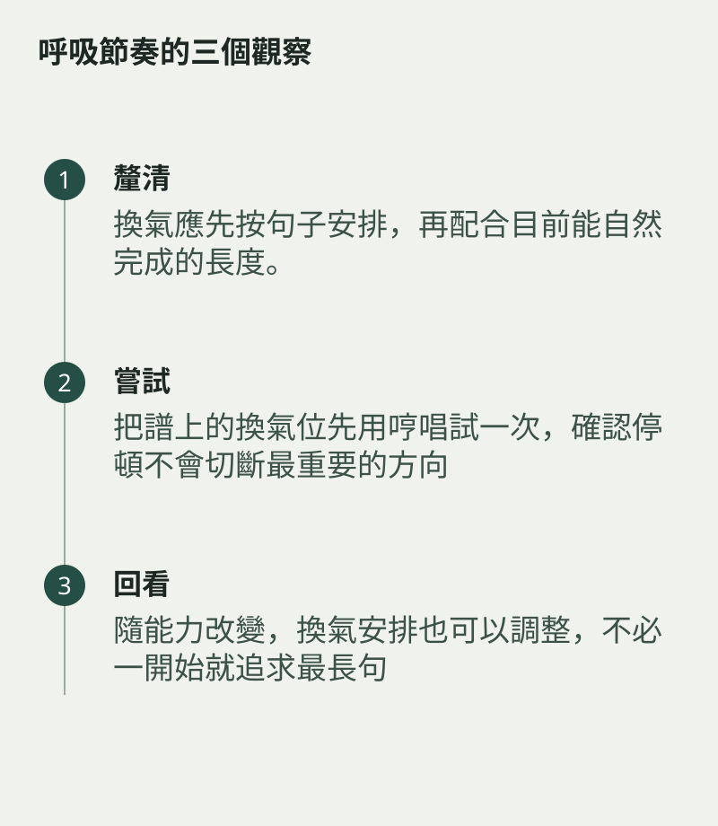

換氣應先按句子安排，再配合目前能自然完成的長度。把換氣前後兩拍單獨練，讓吸氣後的音頭與拍子接得上。
呼吸節奏
不要等到氣不足才臨時停，也不要為模仿長句而憋氣。清楚氣口能讓身體與旋律互相配合。
把譜上的換氣位先用哼唱試一次，確認停頓不會切斷最重要的方向。實際吹奏時，抽出換氣前後的小段，讓吸氣、手指預備與下一音接續。若總在同一處匆忙，可先提早安排一個暫時氣口。

隨能力改變，換氣安排也可以調整
隨能力改變，換氣安排也可以調整，不必一開始就追求最長句。呼吸讓人能把音樂說完整，應是樂句的支援，而不是需要藏起來的失敗。